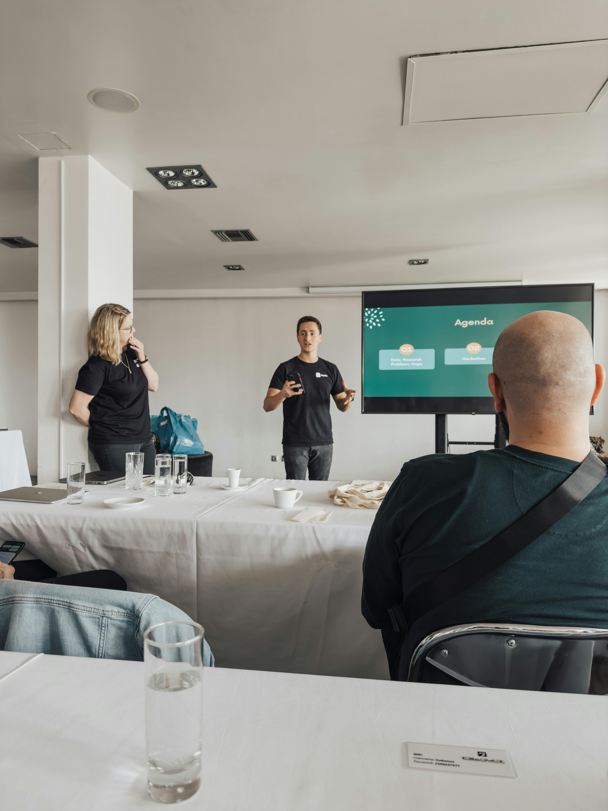

Sales / MCP
CASE 01
Google Mapsから営業リードを自動抽出・分析するMCPツール
地域×業種を指定するだけで、見込み客リストの作成から営業文案づくりまでを自動化。
- Challenge
- 営業リストの作成に毎回数日。連絡先集めと「刺さる提案づくり」が属人的で止まっていた。
- Approach
- Google Mapsから事業者を収集し、Webサイトからメール取得。予約・LINE・Web制作などの「システム化ニーズ」を自動判定し、営業文案まで生成。
- Result
- リスト作成を数日 → 数分に短縮。メール取得できた事業者だけを抽出し、送って終わりでないリストに。
MCP ServerスクレイピングLLM分析CSV連携